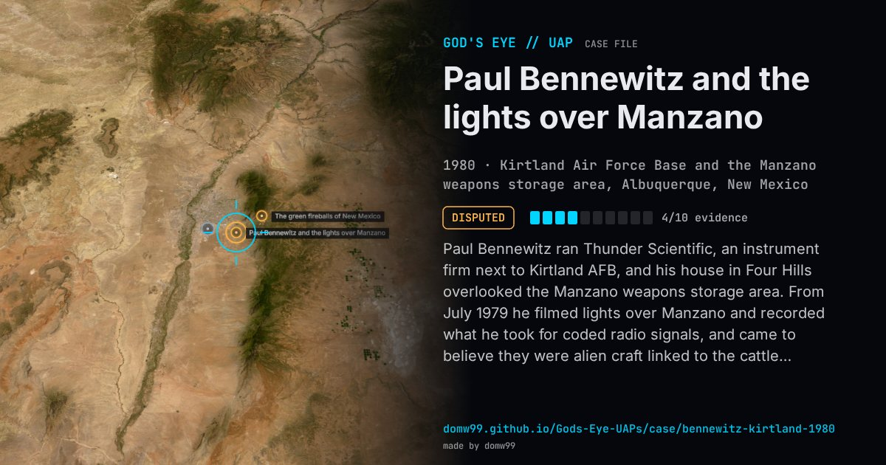

Paul Bennewitz and the lights over Manzano

Paul Bennewitz ran Thunder Scientific, an instrument firm next to Kirtland AFB, and his house in Four Hills overlooked the Manzano weapons storage area. From July 1979 he filmed lights over Manzano and recorded what he took for coded radio signals, and came to believe they were alien craft linked to the cattle mutilations then in the news. In 1980 he took a woman’s abduction story, recovered under hypnosis, as evidence of an underground base, and on October 24 he contacted Kirtland; on November 10 he briefed officers there. Instead of dismissing him, investigators and Moore fed him forged documents and tales of alien bases near Dulce. Bennewitz wrote to Senator Pete Domenici in 1981 and in 1988 drafted “Project Beta”, a plan to attack the base; that year he barricaded himself at home and spent a month in a psychiatric unit. Greg Bishop’s Project Beta (2005) and Mark Pilkington’s Mirage Men (2010) tell the story.
Explanation
Nothing Bennewitz filmed or recorded was ever shown to be a craft. What is documented is what happened next: once he took his films and recordings to Kirtland, Air Force counter-intelligence and the ufologist Bill Moore, by Moore’s own account in 1989, fed him forged papers and stories of alien bases, apparently to steer him away from classified work near the base. The airman Richard Doty later said he had been tasked with exactly that. The “Dulce base” legend grew out of it.
What was seen
Shape: Lights moving over the Manzano storage area at night
Witnesses: Paul Bennewitz, physicist and owner of Thunder Scientific; officers of the Air Force Office of Special Investigations at Kirtland
Duration: From July 1979 through the 1980s
Sources
Browse
- United States
- 1980s
- Disputed
- Photo and video cases
- Military witnesses
- Audio recordings or radio transcripts
- Motion-picture film
- Lights and fireballs